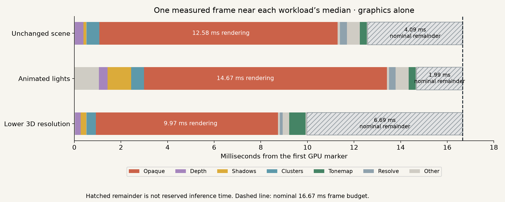
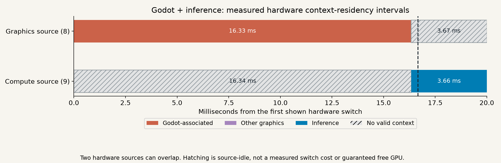
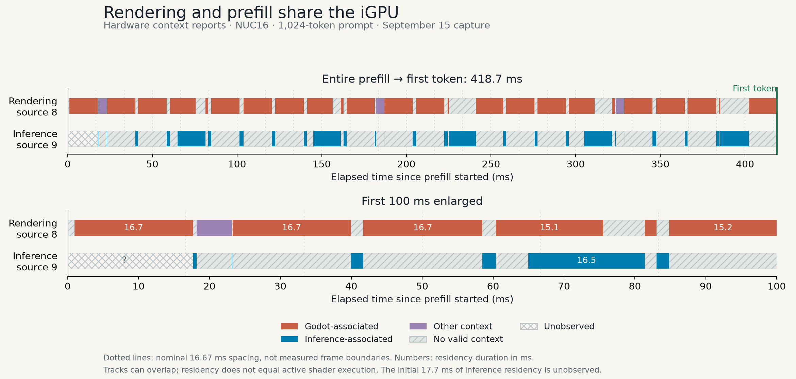

01Unnecessary redraws cost real inference time
Animated graphics made each new token take 4.8× as long. Even an unchanged scene slowed inference if it kept redrawing. Pausing redraws in that unchanged scene brought token time back to baseline.
Average time per new token · lower is better
| No graphics app | 15.3 ms |
|---|---|
| Unchanged scene, still redrawing | 49.2 ms |
| Animated lights | 72.8 ms |
| Lower 3D resolution | 22.3 ms |
| Unchanged scene, redraw paused | 15.2 ms |
Pausing is appropriate only while the view is unchanged; animation and interaction still need new frames.
02The average gap is not a safe time budget
A 60 FPS target allows 16.67 ms per frame. Here is every state from the comparison above; paused or absent rendering has no recurring frame median.
Graphics elapsed time · median / 95th percentile, milliseconds
| Application state | Graphics alone | With inference |
|---|---|---|
| Unchanged scene, redrawing | 12.58 / 19.97 | 12.51 / 28.18 |
| Animated lights | 14.67 / 15.64 | 15.60 / 30.71 |
| Lower 3D resolution | 9.98 / 11.95 | 4.09 / 12.19 |
| Unchanged scene, redraw paused | No recurring frames after settling | |
| No graphics app | Not applicable | |

03We can now see hardware context switches
A controlled two-process test recorded 14,129 hardware switch reports: each process typically held its context for about 1.08 ms. That is measured; the configured quantum was 1.00 ms.
The actual Godot + inference capture recorded 4,702 switch reports. The decode-stage excerpt below shows rendering on one hardware source before inference resumes on the other.

04Prefill finishes across many turns
New prefill-only runs on NUC16 used the existing Godot Lights and Shadows demo, with animated lights and PCSS shadows. Processing the same 1,024-token prompt took 93.6 ms alone and 396.6 ms with rendering—about 4.2× as long. All six pairs completed with bit-for-bit identical logits; rendering advanced during every combined request.
| September 16 controls | Mean prefill | Observed range |
|---|---|---|
| Godot closed | 93.6 ms | 79.2–105.6 ms |
| Animated rendering | 396.6 ms | 392.0–399.6 ms |

How it works: prefill is a sequence of GPU kernels. Normal preemption preserves execution state, allowing work to resume across turns. This trace contains 27 inference-residency intervals before the first token arrives. A short turn therefore does not require the whole prefill to finish inside it.
Xe configures RC_YIELD_DURATION = 80 ms and RC_YIELD_RATIO = 20%. The policy gives compute preference for part of that window under contention; it is not a guaranteed 20% execution share. The bars show context residency, which can overlap across sources—not continuous shader execution or pure switching overhead.
Methods, numerical results and limits
NUC16/Core Ultra 7 356H; Godot 4.5 Vulkan; Qwen2.5-0.5B FP16, OpenVINO 2026.0. Sections 01–03 use requests with 1,024 input tokens and 64 generated tokens; token time averages the 63 decode steps after the first token.
Section 01 uses 50 requests without the full pass profiler. Section 02 uses a separate 50-request pass capture, with five randomized blocks and 100 ms trimmed after phase changes. All outputs matched. Frame percentiles pool correlated frames. GPU frequency was not fixed; the lower-resolution median changes across conditions and is not evidence that inference accelerates rendering.
Section 03 uses Intel PTL OA reports marked INTERNAL_CONTEXT_SWITCH, recording context tag, valid bit, source ID and a 19.2 MHz timestamp. Solo phases associate tags with workloads. We retain separate source tracks; context residency is not continuous shader execution or exclusive ownership of all GPU resources. Switches to an invalid context can represent idle or descheduling, and are not all proven timer-driven preemptions.
Controlled medians: 1.079 / 1.081 ms; p95: 1.084 / 1.086 ms. The Godot diagnostic verified ongoing frames and identical outputs across three combined requests and one inference-only request. Two failed application attempts were excluded. One doubled timer gap occurred in the Godot capture and three in the controlled capture; completeness is not guaranteed. Neither the 1.08−1.00 ms difference nor a blank interval measures pure switch overhead.
Frame and inference results · Hardware summary · Controlled-test distribution · Linux OA reporting · Intel report fields
{kind=link}
Section 04 latency controls: September 16 local time (September 17 UTC), six paired repetitions in alternating quiet/animated order, warm compiled model and kernels, fixed pretokenized input, KV reset before each request, last-token-only LM head. Timed synchronous infer() only; no decode. Compile, tokenization, reset and argmax are excluded. Godot 4.5 Forward+, 1920×1080, 4× MSAA, 60 FPS cap, isolated headless GNOME Wayland session; a frame cap is not proof of display deadlines. The compositor, an existing CPU busy-loop and monitoring process remained present in both conditions; frequency was not fixed. A short CPU-FP32 check passed, and all 12 full-prompt GPU outputs matched exactly. An earlier incomplete campaign stopped at Godot initialization; its samples are excluded from these six complete pairs.
The prefill timeline reuses the September 15 OA capture because fresh privileged capture requires renewed login verification. The first combined request was selected before inspecting its interval pattern. Host request boundaries are aligned through bracketing wall/raw-clock pairs and before/after GPU timer calibration; GPU-host offset sample ranges were 0.3/2.2 µs. Wall/raw offset varied 0.261 ms over the full run and was interpolated. These are calibration diagnostics, not a certified alignment-error bound. The initial compute source has no preceding switch report, so its first 17.7 ms is explicitly unknown. As in Section 03, one doubled timer gap occurred in the full capture; completeness is not guaranteed. Completion in this case is not a starvation or deadline guarantee for every workload. Intel runtime state-save setup supports the resume explanation; the graph does not identify every kernel’s effective preemption granularity.
New prefill measurements · Prefill timeline data and provenance